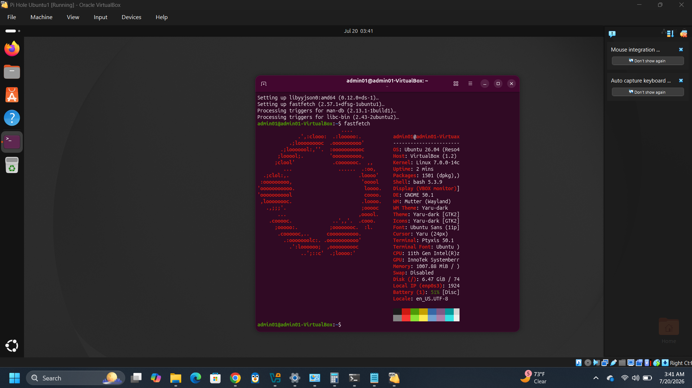
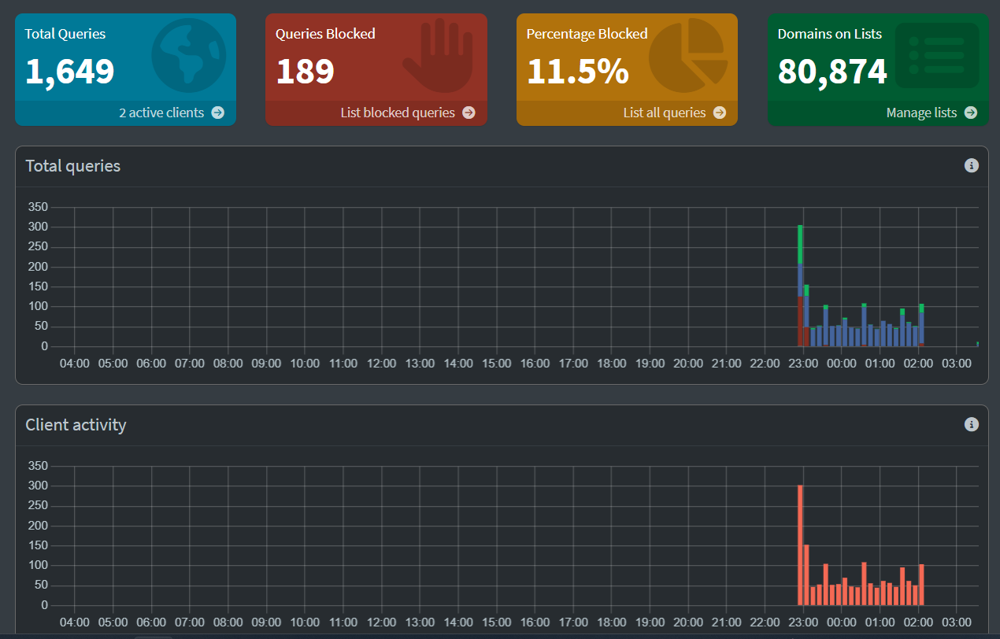

Local DNS Ad-Blocker Deployment (Pi-hole)
Background: I found myself frustrated with the web browser on my Xbox Series S which I use to watch TV ocasionally. There is supposedly a native pop-up ad blocker for said browser, but it did not seem to do the trick. Because the Xbox browser does not support extensions, the only option for a true ad blocker was through a DNS service. I decided to build my own DNS ad blocker as a way to learn more about virtualization and make my own life a little easier.
Project Overview: Provisioned an isolated virtual environment running Ubuntu Linux to host a network-wide DNS sinkhole, intercepting and blocking advertisement and telemetry domains.
Technical Implementation
- Hypervisor Setup: I used VirtualBox to create a virtual environment, modifying network adapters to use a Bridged configuration to integrate seamlessly with the local LAN.
- Linux Administration: Deployed Ubuntu, managed repository updates, and configured a persistent, static IP footprint to prevent DNS client disconnects.
- DNS Management: Installed and optimized Pi-hole upstream DNS settings, managing blocklists to protect local clients.
Troubleshooting & Solutions
During deployment, Ubuntu was consistently freezing which lead me to disconnect the virtual LAN cable for an offline install. This meant I had to manually configur network settings on the machine through the terminal after the install. Additionally, initial VM network constraints blocked incoming LAN queries. I investigated routing and changed the adapter from NAT to Bridged mode, validating IP distribution and connectivity via the Linux terminal interface.
Visual Documentation & Verification
Below are visual verifications of the operational environment, demonstrating the virtualized environment and the live metrics dashboard handling requests.
VirtualBox Environment Setup

Screenshot showing the Ubuntu VM running in Bridged mode with its allocated system resources.
Pi-hole Admin Dashboard

[Insert Pi-hole web GUI dashboard screenshot here]Verification showing the query log, blocked request percentages, and active network clients.